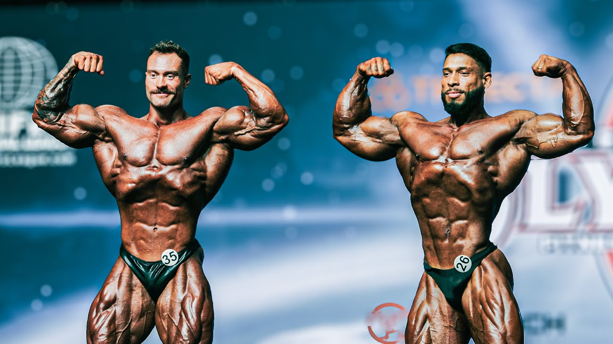
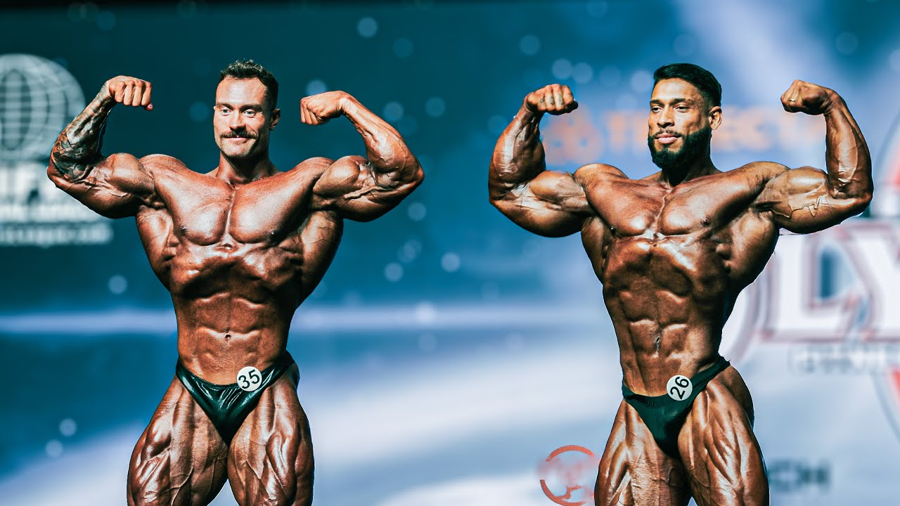

Frægir Sigurvegarar
- Arnold Schwarzenegger:7-faldur sigurvegari (1970–1975, 1980), þekktur fyrir samhverfu og stærð, auk frægðar sinnar í Hollywood.
- Lee Haney:Met í flestum samfelldum sigrum (8 titlar, 1984–1991).
- Ronnie Coleman:Jafn Lee Haney með flesta titla (8 sigrar, 1998–2005), þekktur fyrir mikla vöðvamassa og styrk.
- Phil Heath:7-faldur sigurvegari (2011–2017), þekktur fyrir fyllingu vöðva og ástand.
- Chris Bumstead:6-faldur sigurvegari í Classic Physique flokki (2019–2024), þekktur fyrir óaðfinnanleg hlutföll, fagurfræði og ríkjandi nærveru á sviði.
Menningarleg Áhrif
Mr. Olympia hefur haft mikil áhrif á vinsældir vaxtarræktar. Goðsagnir eins og Arnold Schwarzenegger og Lou Ferrigno (Hulk) hafa farið úr vaxtarrækt yfir í almenna frægð. Keppnin veitti einnig innblástur fyrir heimildarmyndina Pumping Iron (1977), sem gaf íþróttinni alþjóðlega athygli.
Saga
Mr. Olympia var stofnað af Joe Weider, kanadískum vaxtarræktarmanni og frumkvöðli, til að skapa vettvang fyrir atvinnuvaxtarræktarmenn til að keppa um hinn æðsta titil. Fyrsta keppnin var haldin 18. september 1965 í Brooklyn Academy of Music í New York. Larry Scott vann fyrstu titilinn og einnig árið eftir, 1966.
Á undanförnum áratugum hefur Mr. Olympia orðið virtasta keppnin í vaxtarrækt og dregur til sín bestu keppendur frá öllum heimshornum.
Arnold´s blockquote "Hugurinn er takmörkin. Svo lengi sem hugurinn getur ímyndað sér að þú getir gert eitthvað, geturðu gert það—svo framarlega sem þú trúir því 100 prósent.
— Arnold Schwarzenegger
Flokkar
- Karlar – Opinn flokkur: Hefðbundinn og samkeppnishæfasti flokkurinn, með áherslu á mikla vöðvamassa og skilgreiningu.
- Klassísk líkamsbygging: Beinist að fagurfræði, samhverfu og hlutföllum, sem minna á „gullöld“ vaxtarræktar.
- Karlar – Líkamlegt form: Leggur áherslu á grannan og íþróttalegan líkama, þar sem keppt er í stuttbuxum.
- Kvennaflokkar:
- Bikiní
- Wellness
- Figure
- Líkamsbygging kvenna
- Líkamlegt form kvenna
- Fitness
Vídeo og myndir
.webp) 
